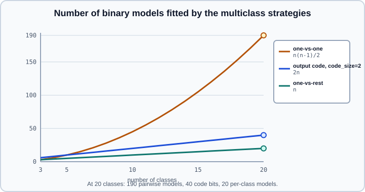
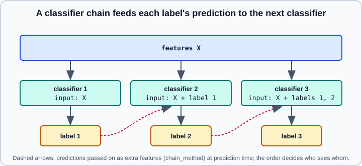

Multiclass, Multilabel & Multioutput Strategies
|
This content was generated with the assistance of AI and should be verified against the official documentation before being relied on in production. |
This page goes deeper than the multiclass and multioutput section of Voting, Stacking & Multiclass, which is the short introduction and the place to start. Here the focus is on choosing a strategy, on how the meta-estimators behave (probabilities, attributes, tuning, scoring) and on the pitfalls of multilabel evaluation. The page does not use PyTorch or TensorFlow. Examples were run on Python 3.13 with scikit-learn 1.9.1, NumPy 2.5.4 and SciPy 1.18.1 on 2026-10-31.
What problem do you have?
sklearn.utils.multiclass.type_of_target classifies a target array, and the strategy follows from the answer:
| Problem | Targets | Values per target | type_of_target |
|---|---|---|---|
Binary |
1 |
2 |
|
Multiclass |
1 |
more than 2 |
|
Multilabel |
more than 1 |
2 (0 or 1) |
|
Multiclass-multioutput |
more than 1 |
more than 2 |
|
Multioutput regression |
more than 1 |
continuous |
|
"Multilabel" means each sample carries zero or more tags and each tag is a yes or no. "Multiclass-multioutput" (also called multitask classification) means several properties per sample, each with its own set of more than two classes, for example the fruit type and the colour of an image. Multiclass is one property with several mutually exclusive classes. Confusing multiclass with multilabel is the most common mistake: a softmax over classes forces exactly one answer per sample, a set of independent sigmoids allows any subset.
Estimators that need no wrapper
Every classifier accepts a multiclass target. The user guide lists what each family does internally, which tells you whether a wrapper can add anything:
-
Natively multiclass: decision trees and extra trees,
RandomForestClassifier,ExtraTreesClassifier,KNeighborsClassifierandRadiusNeighborsClassifier,GaussianNBandBernoulliNB,LinearDiscriminantAnalysisandQuadraticDiscriminantAnalysis,MLPClassifier,NearestCentroid,LabelPropagationandLabelSpreading,RidgeClassifier, andLogisticRegression(all solvers exceptliblinear). -
One-versus-one inside:
SVCandNuSVC, andGaussianProcessClassifierwithmulti_class="one_vs_one". -
One-versus-rest inside:
GradientBoostingClassifier,SGDClassifier,Perceptron,LinearSVCwith its defaultmulti_class="ovr", andGaussianProcessClassifierwith"one_vs_rest". -
Native multilabel: decision trees, extra trees,
RandomForestClassifier,ExtraTreesClassifier,KNeighborsClassifier,RadiusNeighborsClassifier,MLPClassifierandRidgeClassifier. -
Native multiclass-multioutput: trees, forests and the nearest-neighbour classifiers.
-
Native multioutput regression: among others
LinearRegression,Ridge,Lasso,ElasticNet, theMultiTask*linear models,PLSRegression,KernelRidge, trees, forests,KNeighborsRegressorandGaussianProcessRegressor. See PLS, CCA & Random Projection and Gaussian Processes.
The lists above come from the 1.9 user guide; the guide is the authority if a new release adds members. Because native handling is usually more efficient, reach for a wrapper only to change the decomposition, to use a binary-only model, or to give a model with no multi-target support several targets. Tree ensembles are the clearest case where a native multi-output model is a different model from a set of independent ones, since they choose splits that serve all outputs at once.
Multiclass strategies

OneVsRestClassifier (one-versus-all) fits one binary classifier per class, with that class as positive and every other class as negative. It is the usual default: the number of models grows linearly, each class has its own interpretable model, and it also accepts a multilabel indicator matrix. Prediction takes the class whose model is most confident, using decision_function or predict_proba of the base estimator. OneVsOneClassifier fits \(n(n-1)/2\) models, one per pair of classes, each trained only on the samples of its two classes, and predicts by voting with ties broken by the sum of the pairwise confidences. That is slower for many classes, but each sub-problem is small, which helps algorithms that scale badly with the sample count, such as kernel methods. It exposes decision_function but no predict_proba. OutputCodeClassifier assigns each class a binary code word from a random code book and fits one classifier per bit; code_size is a fraction of the number of classes. Below 1 it fits fewer classifiers than one-versus-rest and may lose accuracy; above 1 it adds redundancy that can correct errors in theory, but in practice the errors are correlated and the effect resembles bagging.
The experiment compares them on the wine data (three classes), standardising inside each pipeline, and then looks at the probabilities, AUC, incremental learning and tuning of the wrapped model.
import numpy as np
from sklearn.datasets import load_wine
from sklearn.linear_model import LogisticRegression, SGDClassifier
from sklearn.metrics import roc_auc_score
from sklearn.model_selection import GridSearchCV, cross_val_score, train_test_split
from sklearn.multiclass import OneVsOneClassifier, OneVsRestClassifier, OutputCodeClassifier
from sklearn.pipeline import make_pipeline
from sklearn.preprocessing import StandardScaler
from sklearn.svm import LinearSVC
from sklearn.utils.multiclass import type_of_target, unique_labels
X, y = load_wine(return_X_y=True)
print(type_of_target(y), unique_labels(y), np.bincount(y))
def cv(model):
return round(cross_val_score(make_pipeline(StandardScaler(), model), X, y, cv=5).mean(), 3)
print("LogisticRegression (multinomial)", cv(LogisticRegression(max_iter=1000)))
print("OneVsRest(LogisticRegression) ", cv(OneVsRestClassifier(LogisticRegression(max_iter=1000))))
print("OneVsOne(LogisticRegression) ", cv(OneVsOneClassifier(LogisticRegression(max_iter=1000))))
print("LinearSVC (native one-vs-rest) ", cv(LinearSVC(max_iter=10000)))
print("OneVsOne(LinearSVC) ", cv(OneVsOneClassifier(LinearSVC(max_iter=10000))))
print("OutputCode(LinearSVC, 1.5) ", cv(OutputCodeClassifier(LinearSVC(max_iter=10000), code_size=1.5, random_state=0)))
X_tr, X_te, y_tr, y_te = train_test_split(X, y, stratify=y, random_state=0)
scaler = StandardScaler().fit(X_tr)
X_tr, X_te = scaler.transform(X_tr), scaler.transform(X_te)
ovr = OneVsRestClassifier(LogisticRegression(max_iter=1000)).fit(X_tr, y_tr)
print(len(ovr.estimators_), ovr.classes_, ovr.multilabel_)
raw = np.array([est.predict_proba(X_te[:2])[:, 1] for est in ovr.estimators_]).T
print("raw per-class probabilities, row sums:", raw.sum(axis=1).round(3))
print("predict_proba row sums:", ovr.predict_proba(X_te[:2]).sum(axis=1))
print("AUC ovr", round(roc_auc_score(y_te, ovr.predict_proba(X_te), multi_class="ovr"), 3),
"ovo", round(roc_auc_score(y_te, ovr.predict_proba(X_te), multi_class="ovo"), 3))
ovo = OneVsOneClassifier(LinearSVC(max_iter=10000)).fit(X_tr, y_tr)
print(len(ovo.estimators_), ovo.decision_function(X_te).shape, hasattr(ovo, "predict_proba"))
inc = OneVsRestClassifier(SGDClassifier(random_state=0))
inc.partial_fit(X_tr[:60], y_tr[:60], classes=np.unique(y))
inc.partial_fit(X_tr[60:], y_tr[60:])
print("partial_fit accuracy", round(inc.score(X_te, y_te), 3))
grid = GridSearchCV(OneVsRestClassifier(LogisticRegression(max_iter=1000)), {"estimator__C": [0.1, 1, 10]}, cv=3)
print(grid.fit(X_tr, y_tr).best_params_)multiclass [0 1 2] [59 71 48]
LogisticRegression (multinomial) 0.983
OneVsRest(LogisticRegression) 0.989
OneVsOne(LogisticRegression) 0.983
LinearSVC (native one-vs-rest) 0.978
OneVsOne(LinearSVC) 0.972
OutputCode(LinearSVC, 1.5) 0.978
3 [0 1 2] False
raw per-class probabilities, row sums: [0.999 1.16 ]
predict_proba row sums: [1. 1.]
AUC ovr 1.0 ovo 1.0
3 (45, 3) False
partial_fit accuracy 0.978
{'estimator__C': 0.1}Every strategy ends within a point of the others on this easy problem, so the lesson is not that one wins: it is that on a three-class problem the wrapper changes little and that each variant has a different cost. Points worth reading from the output:
-
The wrapped one-versus-rest model is not the same as multinomial
LogisticRegression. The multinomial model optimises one joint loss over all classes, while one-versus-rest fits independent models with no coordination. -
In scikit-learn 1.9
LogisticRegressionalways uses the multinomial loss for three or more classes; the oldmulti_classparameter has been removed, so the way to get one-versus-rest logistic regression is the wrapper, as above. -
One-versus-rest probabilities are normalised. The raw per-class probabilities of the three binary models do not sum to 1 (here 0.999 and 1.16);
predict_probaof the wrapper rescales each row to sum to 1 in the multiclass case. They are therefore scores that rank classes, not calibrated probabilities. Calibrate afterwards if you need real probabilities, see Probability Calibration. -
OneVsOneClassifierhas nopredict_proba, onlydecision_functionof shape(n_samples, n_classes). NativeSVCcan return either shape throughdecision_function_shape, but the one-versus-rest shape is derived from the pairwise models. -
For multiclass ROC AUC pass the probability matrix with
multi_class="ovr"or"ovo"; see Metrics & Scoring. -
partial_fitis available onOneVsRestClassifierandOneVsOneClassifierwhen the base estimator has it; the first call needs theclassesargument. This is the route to out-of-core multiclass learning, see Scaling & Out-of-Core Learning. -
Parameters of the wrapped model are addressed as
estimator__namein a grid search, andn_jobsfits the binary problems in parallel. See Hyperparameter Search for the double-underscore syntax.
Class imbalance inside one-versus-rest
Each binary sub-problem is imbalanced by construction: a class with 10 percent of the samples is a 1:9 problem against everything else, even when the overall data are only mildly imbalanced. Class weighting or threshold moves inside the base model help, but the combined decision (the arg-max over models) interacts with them in a way that is hard to reason about; evaluate the wrapped system as a whole. See Imbalanced Data and Tuning the Decision Threshold.
Multilabel classification
The target is a binary matrix of shape (n_samples, n_labels), dense or sparse. MultiLabelBinarizer converts a list of tag collections to that matrix and back (inverse_transform returns tuples of tags). The dataset below has two labels that each depend on two features through noise, and a third label that is the logical AND of the first two. It is a minimal case where the labels are dependent.
import numpy as np
from sklearn.linear_model import LogisticRegression
from sklearn.metrics import accuracy_score, f1_score, hamming_loss, multilabel_confusion_matrix
from sklearn.model_selection import train_test_split
from sklearn.multiclass import OneVsRestClassifier
from sklearn.multioutput import ClassifierChain, MultiOutputClassifier
from sklearn.preprocessing import MultiLabelBinarizer
from sklearn.utils.multiclass import type_of_target
tags = [["python", "ml"], ["python"], ["ml", "stats"], [], ["stats"], ["python", "ml", "stats"]]
mlb = MultiLabelBinarizer()
Y_tags = mlb.fit_transform(tags)
print(mlb.classes_, Y_tags.shape, type_of_target(Y_tags))
print(mlb.inverse_transform(Y_tags[:2]))
rng = np.random.RandomState(0)
n = 1500
X = rng.randn(n, 6)
y1 = (X[:, 0] + 0.8 * rng.randn(n) > 0).astype(int)
y2 = (X[:, 1] + 0.8 * rng.randn(n) > 0).astype(int)
Y = np.c_[y1, y2, y1 & y2] # the third label depends on the first two
X_tr, X_te, Y_tr, Y_te = train_test_split(X, Y, random_state=0)
def report(name, model):
P = model.fit(X_tr, Y_tr).predict(X_te)
print(f"{name:20s} subset acc {accuracy_score(Y_te, P):.3f} hamming {hamming_loss(Y_te, P):.3f} "
f"micro F1 {f1_score(Y_te, P, average='micro'):.3f} macro F1 {f1_score(Y_te, P, average='macro'):.3f} "
f"samples F1 {f1_score(Y_te, P, average='samples'):.3f}")
return P
report("MultiOutputClassifier", MultiOutputClassifier(LogisticRegression()))
P = report("OneVsRestClassifier", OneVsRestClassifier(LogisticRegression()))
report("ClassifierChain", ClassifierChain(LogisticRegression(), order=[0, 1, 2]))
print(multilabel_confusion_matrix(Y_te, P)[2])['ml' 'python' 'stats'] (6, 3) multilabel-indicator
[('ml', 'python'), ('python',)]
MultiOutputClassifier subset acc 0.517 hamming 0.228 micro F1 0.682 macro F1 0.629 samples F1 0.458
OneVsRestClassifier subset acc 0.517 hamming 0.228 micro F1 0.682 macro F1 0.629 samples F1 0.458
ClassifierChain subset acc 0.568 hamming 0.231 micro F1 0.690 macro F1 0.663 samples F1 0.457
[[274 17]
[ 57 27]]The three meta-estimators behave as follows:
-
OneVsRestClassifieron an indicator matrix fits one binary model per column, independently.MultiOutputClassifierdoes the same for any number of outputs, and here both produce identical predictions. Neither can use the fact that one label is the AND of the other two. -
ClassifierChainfits the classifiers in sequence. Each model receives the features plus the earlier labels in the chain (the true ones during training, predictions when predicting), so it can model label dependence. With the order[0, 1, 2]the AND label can use the other two, and the subset accuracy rises from 0.517 to 0.568. The Hamming loss, a per-label measure, does not improve, which shows that subset accuracy and Hamming loss answer different questions.
Chains in more detail
A chain’s quality depends on its order. If the dependent label is placed first, it cannot see the labels it depends on. order accepts a list of column indices, None (the label order) or "random", and order_ records the order used. The user guide suggests fitting several randomly ordered chains and averaging their predictions. The parameters chain_method (which method of the base estimator provides the features passed along: "predict", "predict_proba", "predict_log_proba" or "decision_function") and cv (use cross-validated predictions rather than the true labels of the training data as the inputs to the next classifier, which removes the mismatch between training and prediction) are the two knobs that change how the chain is trained.
import numpy as np
from sklearn.datasets import make_regression
from sklearn.ensemble import RandomForestRegressor
from sklearn.linear_model import LogisticRegression, Ridge
from sklearn.metrics import jaccard_score, r2_score
from sklearn.model_selection import train_test_split
from sklearn.multioutput import ClassifierChain, MultiOutputClassifier, MultiOutputRegressor, RegressorChain
rng = np.random.RandomState(0)
n = 1500
X = rng.randn(n, 6)
y1 = (X[:, 0] + 0.8 * rng.randn(n) > 0).astype(int)
y2 = (X[:, 1] + 0.8 * rng.randn(n) > 0).astype(int)
Y = np.c_[y1, y2, y1 & y2]
X_tr, X_te, Y_tr, Y_te = train_test_split(X, Y, random_state=0)
def subset_acc(P):
return round(float((P == Y_te).all(axis=1).mean()), 3)
chains = [ClassifierChain(LogisticRegression(), order="random", random_state=i).fit(X_tr, Y_tr) for i in range(10)]
print("orders:", [list(map(int, c.order_)) for c in chains[:4]])
print("single chains, subset accuracy:", [subset_acc(c.predict(X_te)) for c in chains[:4]])
P_mean = np.mean([c.predict_proba(X_te) for c in chains], axis=0)
print("average of 10 chains:", subset_acc((P_mean >= 0.5).astype(int)),
"samples Jaccard", round(jaccard_score(Y_te, (P_mean >= 0.5).astype(int), average="samples"), 3))
cv_chain = ClassifierChain(LogisticRegression(), order=[0, 1, 2], cv=5, chain_method="predict_proba").fit(X_tr, Y_tr)
print("cv=5 chain:", subset_acc(cv_chain.predict(X_te)))
moc = MultiOutputClassifier(LogisticRegression()).fit(X_tr, Y_tr)
proba = moc.predict_proba(X_te[:2])
print(type(proba).__name__, len(proba), proba[0].shape)
print("score():", round(moc.score(X_te, Y_te), 3), "subset accuracy:", subset_acc(moc.predict(X_te)),
"mean per-column accuracy:", round(float((moc.predict(X_te) == Y_te).mean()), 3))
Xr, Yr = make_regression(n_samples=400, n_features=8, n_informative=5, n_targets=3, noise=10, random_state=0)
Yr[:, 2] = Yr[:, 0] + 0.5 * Yr[:, 1] + rng.randn(400) * 5 # third target built from the first two
Xr_tr, Xr_te, Yr_tr, Yr_te = train_test_split(Xr, Yr, random_state=0)
models = {
"Ridge (native 2-D y)": Ridge(),
"MultiOutputRegressor(Ridge)": MultiOutputRegressor(Ridge()),
"RegressorChain(Ridge)": RegressorChain(Ridge()),
"RandomForest (native)": RandomForestRegressor(n_estimators=50, random_state=0),
"MultiOutputRegressor(RF)": MultiOutputRegressor(RandomForestRegressor(n_estimators=50, random_state=0)),
}
for name, m in models.items():
P = m.fit(Xr_tr, Yr_tr).predict(Xr_te)
print(f"{name:28s} R2 {r2_score(Yr_te, P):.3f} per target {np.round(r2_score(Yr_te, P, multioutput='raw_values'), 3)}")orders: [[2, 1, 0], [0, 2, 1], [2, 1, 0], [1, 0, 2]]
single chains, subset accuracy: [0.544, 0.568, 0.544, 0.576]
average of 10 chains: 0.528 samples Jaccard 0.408
cv=5 chain: 0.525
list 3 (2, 2)
score(): 0.517 subset accuracy: 0.517 mean per-column accuracy: 0.772
Ridge (native 2-D y) R2 0.991 per target [0.987 0.994 0.992]
MultiOutputRegressor(Ridge) R2 0.991 per target [0.987 0.994 0.992]
RegressorChain(Ridge) R2 0.991 per target [0.987 0.994 0.992]
RandomForest (native) R2 0.791 per target [0.739 0.832 0.801]
MultiOutputRegressor(RF) R2 0.848 per target [0.853 0.893 0.796]Different orders give different subset accuracies (0.544 to 0.576 across four chains), and averaging ten random chains gave 0.528 here, lower than the single chains that happened to put the dependent label last. Averaging reduces the variance caused by the order but does not guarantee a gain, and with cv=5 and chain_method="predict_proba" the result was 0.525; measure rather than assume. Note that the chain’s accuracy depends on getting the first predictions right, since errors propagate down the chain.

Scoring multilabel models
score is not what you may expect. MultiOutputClassifier.score returned 0.517, which equals the subset accuracy (the fraction of samples with every label right), while the average per-label accuracy was 0.772. Subset accuracy is the strictest measure and is dominated by the hardest label. The metrics in sklearn.metrics have multilabel versions, described in Metrics & Scoring:
-
hamming_loss: the fraction of wrong label slots, which forgives partly correct predictions. -
accuracy_score: subset accuracy for indicator matrices. -
f1_score,precision_score,recall_scorewithaverage="micro"(pool every label slot, favouring frequent labels),"macro"(the unweighted mean of per-label scores, favouring rare labels),"weighted"(macro weighted by support) and"samples"(score per sample, then average). -
jaccard_scorefor the overlap between predicted and true label sets. -
multilabel_confusion_matrix, one 2 by 2 matrix per label (the output above is the one for the AND label: 57 false negatives and 17 false positives, so the model misses it more often than it invents it), andclassification_reportfor the per-label table.
predict_proba of a MultiOutputClassifier returns a list with one (n_samples, n_classes_i) array per output, not a single matrix, and ClassifierChain.predict_proba returns an (n_samples, n_labels) matrix of positive-class probabilities. Predicting an empty set of labels is valid in multilabel problems; you may want to enforce at least one label or tune a per-label threshold instead of using 0.5.
Multiclass-multioutput and multioutput regression
When there are several targets with more than two classes each, MultiOutputClassifier fits one classifier per column; it assumes outputs are independent, multiplies training time by the number of outputs, and no metric in sklearn.metrics supports this target type directly, so compute a metric per column. For continuous targets, MultiOutputRegressor fits one regressor per target and RegressorChain chains them, giving each regressor the previous targets as features.
The regression part of the experiment builds a third target that is a function of the first two, and compares native multi-target estimators with the wrappers. For a linear model the wrapper gives exactly the same predictions as passing a two-dimensional y (ordinary least squares and ridge solve each target separately anyway), so the wrapper is pure overhead there. For the random forest the native model, which chooses splits to serve all targets together, differs from independent forests, and here the independent forests scored higher on average (0.848 against 0.791). Neither is better in general; try both when targets are related. The chain adds nothing to a linear model because the third target is already linear in the features; it can help when a nonlinear dependence between targets exists.
Choosing a strategy
| Situation | Suggested approach |
|---|---|
Multiclass with a natively multiclass model |
Use the model directly |
Multiclass with a binary-only or margin-based model |
|
Many classes (hundreds) |
One-versus-rest, or a model with a softmax output such as a neural network; one-versus-one’s quadratic count becomes prohibitive |
Multilabel, labels roughly independent |
Native multilabel model, or |
Multilabel, labels clearly dependent |
|
Several targets with several classes each |
|
Several continuous targets |
A natively multi-target model first; |
For very many classes or labels (extreme classification), or when label embeddings matter, scikit-learn’s wrappers reach their limits and neural networks with a softmax or sigmoid head are the natural step; see Neural Networks: MLPClassifier & MLPRegressor and From scikit-learn to Deep Learning.
Pitfalls
-
Do not wrap a model that is already multiclass without a reason. A wrapper can lower accuracy and always multiplies the model count.
-
A multilabel target must be an indicator matrix. A 1-D array of class ids is multiclass, and a list of lists must go through
MultiLabelBinarizerfirst. -
Check
type_of_targetafter loading data. A matrix of integer class ids with several columns is multiclass-multioutput, not multilabel. -
One-versus-rest probabilities are not calibrated. They are normalised scores.
-
Subset accuracy and Hamming loss disagree. Pick the metric that matches the business meaning and report more than one.
-
Chain order matters and errors propagate. Fix
random_state, compare several orders and a no-chain baseline. -
Split by group when labels cluster. Multilabel data are often generated by documents, patients or sessions; leaking them across the split inflates every score. See Cross-Validation.
-
Stratification of multilabel targets is not provided by
StratifiedKFold. It accepts only single-label targets, so rare labels may be missing from a fold; check label counts per fold. -
Parallel fitting is by sub-problem.
n_jobson a wrapper fits the binary models in parallel, which may oversubscribe if the base estimator is also parallel.
Older material
Older articles show LogisticRegression(multi_class="ovr") to select a strategy. In current releases the way to ask for one-versus-rest explicitly is the OneVsRestClassifier wrapper, and the user guide’s list of native strategies (above) describes what each estimator does by default. Tutorials that call OneVsRestClassifier and report only subset accuracy for multilabel data should be re-read with the other metrics of this page in mind.
See also
-
Voting, Stacking & Multiclass for the short introduction and for ensembles of classifiers.
-
Support Vector Machines for the one-versus-one strategy used inside
SVC. -
Linear Models & Logistic Regression for the multinomial loss.
-
scikit-learn for machine learning for the other pages of this part.